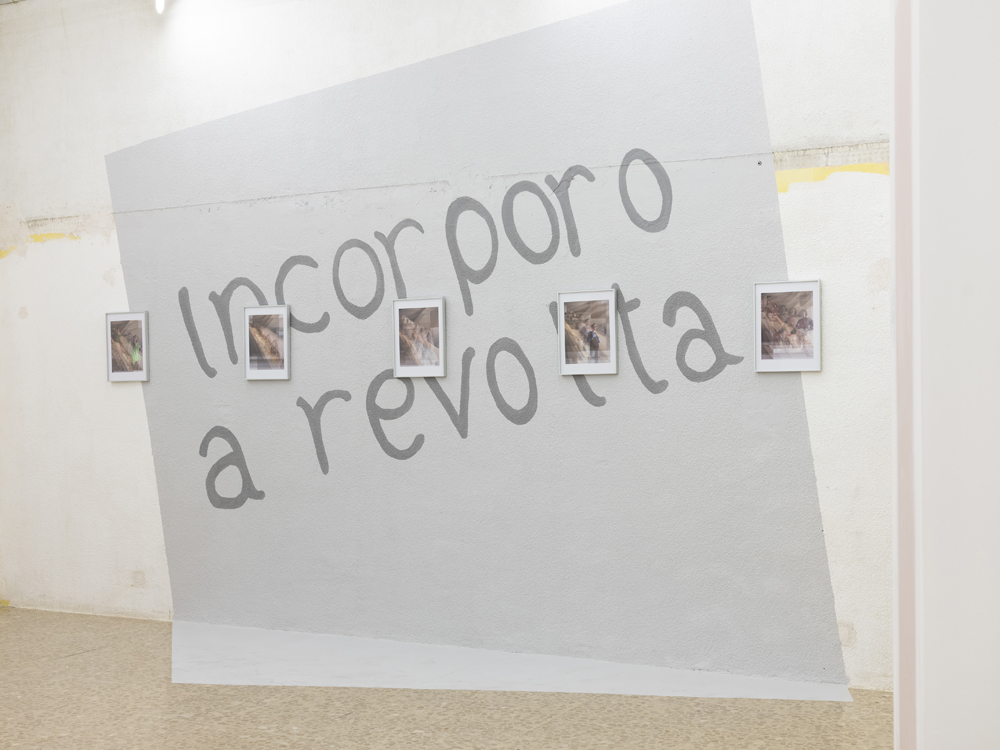
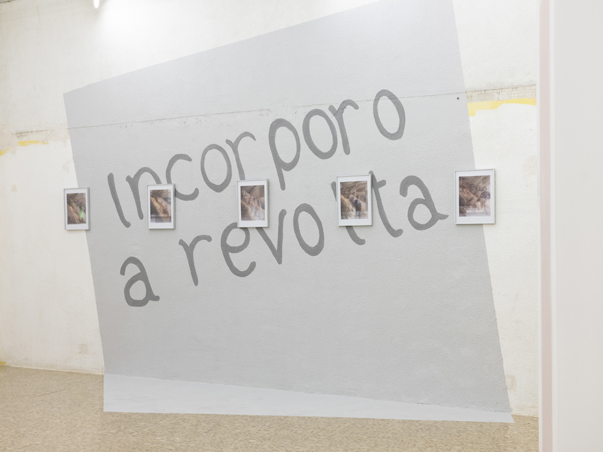
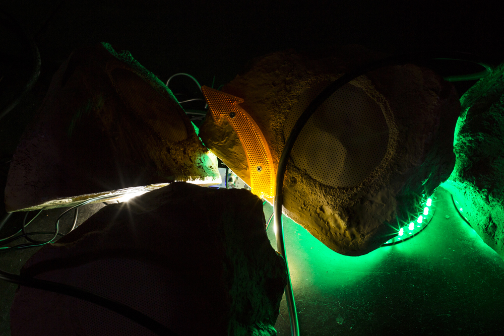
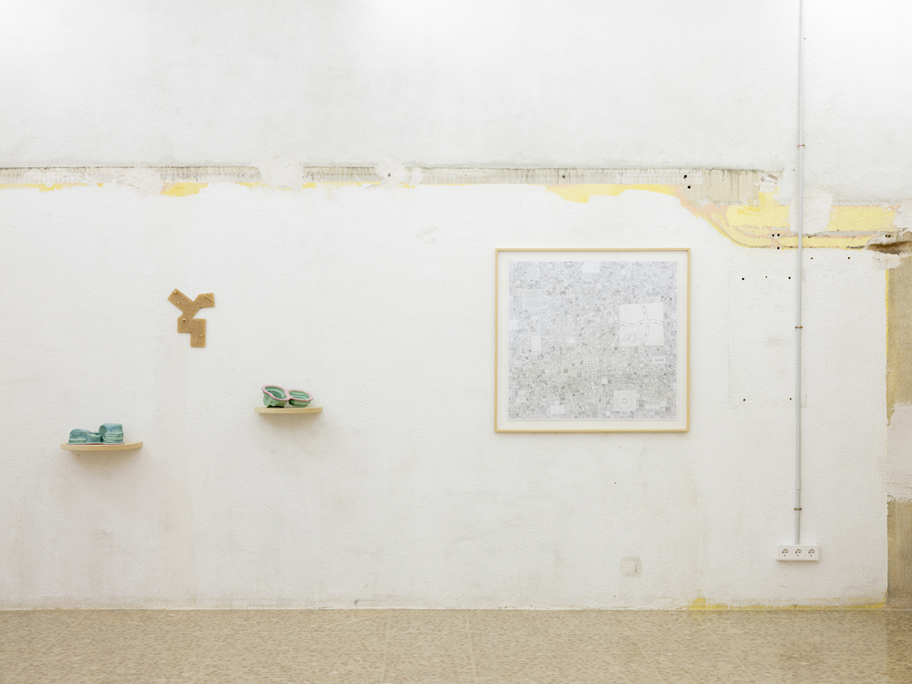
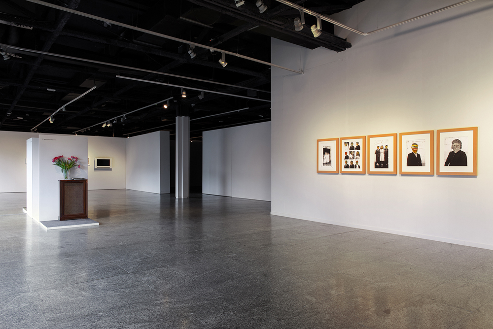
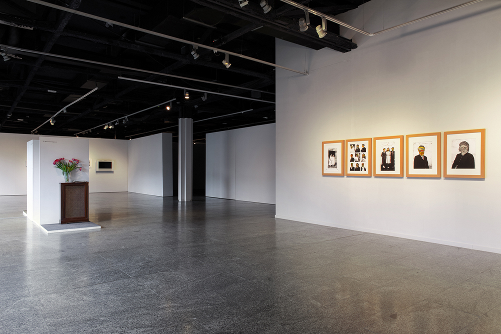

Postcrisis. Co-curated with Marta Sesé and Louis-Charles Tiar.
Artists: Tamara Arroyo, Marlon de Azambuja, Iñaki Domingo, Mario Espliego, Esther Mañas y Arash Moori, Clara Montoya, Rafa Munárriz y Agnès Pe.
Exhibited at Conde Duque (Madrid, 2020) and at Nadie Nunca Nada No, Alimentación 30, El cuarto de invitados, Nigredo, Hiato, d11 and Casabanchel.
Images by Galerna.



Rebobinar. First solo show in Spain by Chilean artist Rocio Olivares.
Exhibited at Dilalica Barcelona. September 2019.



Archivo Rastro. Co-curated with Marta Sesé and Louis-Charles Tiar
Artist: Felix R. Cid, Rafael Doctor Roncero, Cristina Mejías, Cristina de Middel, Ferran Pla, Miguel Ángel Tornero, Antonio Xoubanova, Nicholas F. Callaway, Colectivo PIPOL. Exhibited at c arte c, Madrid, 2019. Also selected as part of Red Itiner Program in 2020. Images by Galerna.
 
